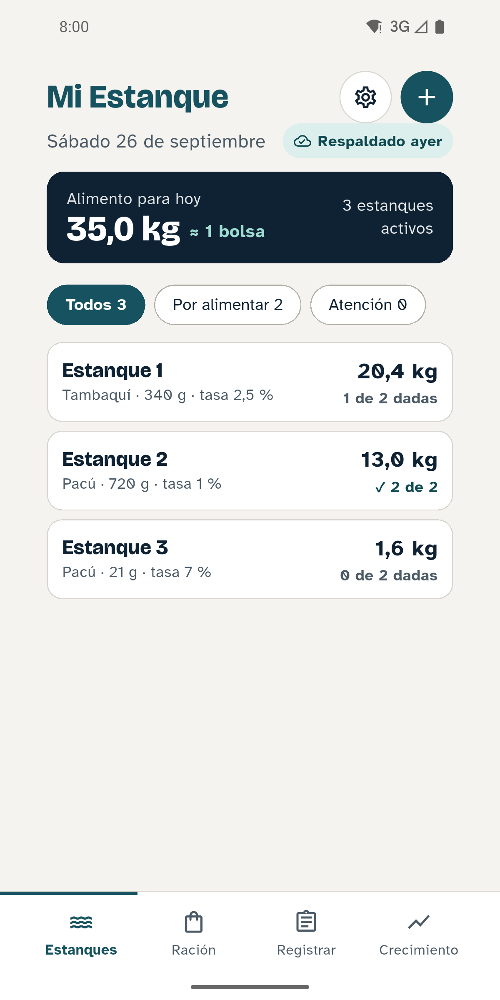
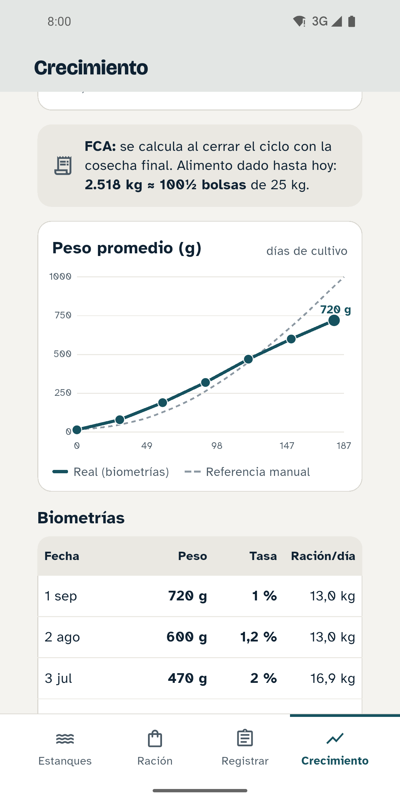
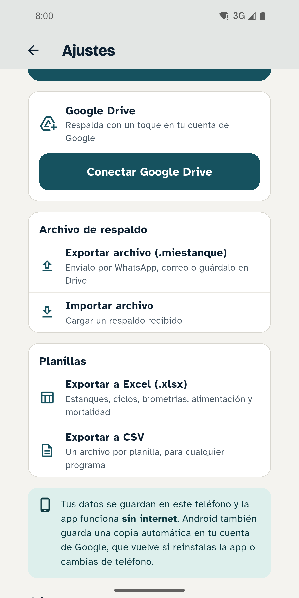

El alimento es el mayor gasto de la crianza
Si se da de más, se pierde en el agua y la ensucia. Si se da de menos, los peces crecen lento y el ciclo se alarga. Por eso hay que pesar y calcular, no adivinar.
Del pesaje a la ración de cada día
Biometría
Una vez al mes pesas en un balde una muestra del 3 al 5 % de los peces.
Biomasa
La app calcula sola el peso promedio y los kilos de peces del estanque.
Ración de hoy
Cuánto dar, en kilos y bolsas, repartido en 2 tomas al día.
Con la tabla de alimentación del Manual BPP 2025, revisada por los ingenieros pecuarios de Pacu Yachay.
Así se ve en el teléfono
Letra y botones grandes, pensada para usarse junto al estanque.



Todo el ciclo, en orden
Sin internet
Todo se guarda en el teléfono.
Mortalidad y cosechas
Y el FCA al cerrar el ciclo: cuánto alimento costó cada kilo de pescado.
Respaldo
En tu propio Google Drive.
Planillas en Excel
Con los formatos de registro del manual, para técnicos e instituciones.
Empieza gratis
Gratis
Bs 0
Hasta 3 estanques, con todas las funciones.
Plan Total
Bs 100
Precio de lanzamientoEstanques ilimitados. Un solo pago, para siempre. Pídelo por WhatsApp.